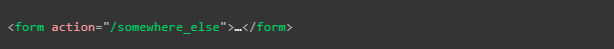

Si se simplifica el funcionamiento de las paguinas web se podria definir como la metodologuía "cliente/servidor" la cual consiste en que un "cliente" la mayoria de los casos un navegador realiza una solicitud al servidor solicitando los datos requeridos para llevar a cabo una acción, a su vez el servidor retorn una respuesta hacia el cliente con dichos datos. Por su lado todas estas consultas y respuestas son enviadas atravez de cietos "protocolos" de transmisión de datos, en general uno de los más simples y estandarizados en la web es el protocolo HTTP
En ese sentido un formulario no es más que un mecanismo simple para que el usuario pueda realizar una consulta o enviar datos hacia un servidor atravez del protocolo HTTP, de hecho basicamente todos los atributos de un formulario van enfocados a configurar la solicitud que se realizará, a su vez los forularios poseen dos atributos en particular los cuales estan enfoncados en definir de que forma se enviaran los datos haca el servidos, estos atributos son:
-
Atributo Action
Este atributo define hacia donde se envaran los datos, su valor debe de ser una URL relativa o absoluta valida, en caso de que esta URL no sea definida entonces los datos seran enviados por defecto a la uicación de la paguinaque contiene el formulario, es decir a la paguina actual
A continuación se muestran las tres formas en las que se puede indicar la URL:
Uso de una URL absoluta:
Uso de una URL relativa
Caso de un formulario en el que no se espesifica el atributo "action"

En el servidor el valor del atributo "action" debe ser un archivo capaz de manejar los datos entrantes, lo que incluye realzar la validación del lado del servidor luego de esto el servidor respone a la consulta ya sea enviado los datos solicitados, recargando la paguina o realizando una acción en esta.
En sí los datos porvenientes de todos aquellos controladores que no sean anchivos se envian en pares de "name=value" es decir el valor de los datos es enviado en conjunto al nombre del elemento del que provienen.
-
Atributo Method
Este atributo define el metodo con el cual se enviaran los datos, esto debido a que el protocolo HTTP proporciona varias formas de enviar una solicitud, entre esos diversos metodos en la actualidad los más difundidos son el metodo "GET" y el "POST", cada uno de estos con sus propias bentajas y desbentajas así como marcadas diferencias a la hora de realizar las consultas HTTP.
Para entender adecuadamente la diferencias entre ambos es necesario recalcar el funcionamiento del protocolo HTTP. Cada vez que se desea acceder a un recurso web el navegador envia una consulta HTTP al URL que alberga los archivos en cuentión, las consultas estan compuestas por dos partes diferentes:
El encabezado: Esta compuesto por los metadatos globales sobre las capacidades del navegador
Un cuerpo: Contiene la información necesaria para que el servidor porcese la solicitud espesifica que se esta realizando
-
Metodo GET
Este metodo de envio de datos se utiliza principalmente para aquellos casos en los que se realisa una solicitud de datos al servidor, en estos casos el naveador envia una consulta con un cuerpo vacio lo que resulta en que cualquier dato de un formulario que se envie atravez de este metodo sera indexado al URL destino, es decir en el caso de que se envie información con un metodo GET estos datos se enviaran atravez de la URL por lo que seran vicibles lo que no lo hace una buena opción para enviar información delicada, un ejmplo de uso seria el siguiete:
En base a este HTML

Se obtendria este resultado

A la hora de anexar los datos a la URL existe un formato determinado, al culminar la dirección URL destino se añade un ? seguido de los datos en cadenas "nombre/valor" cada uno separado por un " ampersand (&)" de ese modo es que se envian los datos atrabes del metodo GET
Por lo tanto la visualizacíon de los datos en la consulta GET seriá:

-
Metodo POST
Este metodo de envio de datos se diferencia del GET en que los datos enviados con la solicitud no se anexaran al URL ni tampoco se podran visualizar en algun otro lugar ya que en el planteamiento de este metodo si se tiene en cuenta los datos enviados al servidor, los cueles son enviados dentro del cuerpo de la cunsulta, es decir que este metodo esta pensado para emplearse en todos aquellos casos en los que sea necesario enviar datos de caracter privados al servidor como por ejemplos las contraseñas de acceso.
Como ejemplo vamos a tomar el HTML mostrado anteriormente pero con el valor "POST" en el atributo "method":

Por lo tanto la visualización de la consulta sería la siguiete:

Los datos enviados se siguen enviando en los conjuntos "nombre/valor al igual que se sigue utilizando el " ampersand (&)" para delimitarlos, por otro lado el encabezado Content-Length indica el tamaño del cuerpo y el encabezado Content-Type indica el tipo de recurso enviado al servidor.
Nota: Es posible el realizar una solicitud al servidor utilizando el metodo HTTPS (HTTP encriptado) desde una paguina no segura sin mayor inconveneinte, ya que el HTTPS sifra los datos al enviarlos, sin embargo en el caso de que desde una paguina segura se pretenda realizar una consulta desde el protocolo HTTP sin encriptar los datos todos los navegadores deberian de disparar una alerta al usuario, ya que los datos no encriptados son bulnerales a ser interceptados por terceros.
Nota: Si se da la necesidad de enviar una gran cantidad de datos a un servidor lo más recomendable es emplear el metodo POST ya que algunos navegadores y servidores asignan un limite a los URL que aceptan y ya que este se trata del mecanismo para enviar los datos con el metodo GET se podria producir un error en estos casos
Visualizar consultas HTTP
Por lo general las consultas HTTP de una paguina web no se muestran al usuario en ningun punto del envio de datos, por lo tanto para poder visualizarlas es necesario el uso de herramientas especializadas como lo son Firefox Network Monitor y Chrome DevTools, sin embargo pese a que estas herramientas ofrecen una bariedad de opciones al emplearlas en cuanto a lo que es la visualización de las consultas HTTP tambien es posible el visuañizarlas desde las "herramientas de desarrollador de google chrome, los pasos para poder visaulizar las consultas son los siguientes:
- Realizar clic derecho y se seleciona "inspecionar elemento"
- Se seleciona la pestaña "Red (Network)"
- Se seleciona el filtro "Todo (All)"
- Se refresca la paguina
- Se selecciona la consulta HTTP en el panel izquierdo, los datos se mostraran como una ventana emergente
Un ejemplo de esto sería: